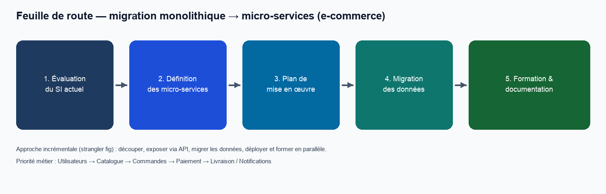

BADET Mael
Livecampus
Stratégie SI
MINI CAS 3
ÉcoleLivecampus
CoursStratégie SI
ProfesseurÀ compléter
LivrableMINI CAS 3
GroupeG1
Chapitres3
Membres du groupe
LEBLOND Tristan
LOURENCO Quentin

MASIA Antoine
Sommaire
- ÉNONCÉ DU MINI-CAS …
- Contexte …
- Tâches …
- Livrable attendu …
- VUE D'ENSEMBLE DE LA FEUILLE DE ROUTE …
- 1. ÉVALUATION DU SI ACTUEL …
- 1.1 Principales fonctionnalités du monolithe …
- 1.2 Points de faiblesse et goulots d'étranglement …
- 1.3 Livrables de la phase d'évaluation …
- 2. DÉFINITION DES MICRO-SERVICES …
- 2.1 Services prioritaires (ordre recommandé) …
- 2.2 Interfaces d'interaction entre services …
- 3. PLAN DE MISE EN ŒUVRE …
- 3.1 Calendrier indicatif (6 mois) …
- 3.2 Stratégie de déploiement …
- 3.3 Plan de tests …
- 4. MIGRATION DES DONNÉES …
- 4.1 Principes …
- 4.2 Étapes par domaine …
- 4.3 Points d'attention …
- 5. FORMATION ET DOCUMENTATION …
- 5.1 Formation des équipes techniques …
- 5.2 Documentation à produire …
- SYNTHÈSE ET BÉNÉFICES ATTENDUS …
Énoncé du mini-cas
Contexte
Une société de e-commerce doit faire face à une augmentation rapide de son volume de transactions. Le système d’information (SI) actuel, basé sur une architecture monolithique, n’est pas assez flexible pour s’adapter à cette croissance. L’entreprise souhaite donc migrer vers une architecture micro-services.
Tâches
Proposer une feuille de route pour migrer le SI vers une architecture micro-services, incluant :
- l’évaluation du SI actuel ;
- la définition des micro-services ;
- le plan de mise en œuvre ;
- la migration des données ;
- la formation et la documentation.
Livrable attendu
Un document PDF d’aspect professionnel comprenant :
- une page de garde (école, cours, professeur, membres du groupe) ;
- une page reprenant l’énoncé du mini-cas ;
- des pages numérotées avec une présentation claire ;
- des schémas ou illustrations pour appuyer l’analyse.
Vue d’ensemble de la feuille de route

Nous recommandons une migration incrémentale (approche strangler fig) plutôt qu’un « big bang » : on extrait progressivement des domaines du monolithe, on les expose via des API, on bascule le trafic, puis on retire l’ancien code. Cette stratégie limite les risques, préserve la continuité du e-commerce et permet d’apprendre à chaque itération.
1. Évaluation du SI actuel
1.1 Principales fonctionnalités du monolithe
| Domaine | Fonctionnalités typiques | Criticité business |
|---|---|---|
| Utilisateurs / comptes | Inscription, authentification, profils, préférences | Critique |
| Catalogue | Produits, stocks affichés, catégories, recherche | Critique |
| Commandes | Panier, validation, suivi de commande | Critique |
| Paiement | Autorisation, capture, remboursements | Critique |
| Livraison | Transporteurs, tracking, créneaux | Élevée |
| Marketing / promotions | Codes promo, recommandations, newsletters | Moyenne |
| Notifications | E-mails, SMS, push | Élevée |
| Reporting / BI | Tableaux de bord, exports | Moyenne |
1.2 Points de faiblesse et goulots d’étranglement
- Scalabilité globale contrainte : pour absorber le pic de transactions, il faut scaler tout le monolithe, même les modules peu sollicités → coûts et complexité inutiles.
- Déploiements risqués : une modification (ex. catalogue) impose de redéployer l’ensemble ; un bug peut impacter commandes et paiement.
- Couplage fort : bases et modules partagés créent des dépendances cachées et freinent les évolutions parallèles des équipes.
- Goulots techniques probables : - base de données unique saturée aux heures de pointe ; - file d’attente / traitement synchrone des commandes et paiements ; - recherche catalogue et gestion des stocks dans le même processus applicatif ; - montée en charge difficile du front et du back liés.
- Résilience faible : la panne d’un module peut entraîner l’indisponibilité de tout le site.
1.3 Livrables de la phase d’évaluation
- Cartographie applicative et flux (C4 / diagrammes de séquence des parcours critiques : achat, paiement, suivi).
- Mesure des performances actuelles (latence, throughput, erreurs) sur les parcours « panier → paiement → confirmation ».
- Matrice des dépendances données / modules.
- Score de risque par domaine (complexité × criticité × volume).
2. Définition des micro-services
2.1 Services prioritaires (ordre recommandé)
On extrait d’abord les domaines stables, bien bornés et à fort trafic, pour démontrer de la valeur rapidement.
| Priorité | Micro-service | Responsabilité | Justification |
|---|---|---|---|
| P1 | user-service |
Comptes, auth, profils | Socle transverse, faible couplage métier |
| P1 | catalog-service |
Produits, catégories, recherche | Fort volume lecture, scalable indépendamment |
| P2 | order-service |
Panier, commandes, états | Cœur métier e-commerce |
| P2 | payment-service |
Paiements, remboursements | Isolation sécurité / conformité |
| P3 | inventory-service |
Stocks temps réel | Réduit les surventes sous charge |
| P3 | shipping-service |
Expédition, tracking | Intégrations transporteurs |
| P4 | notification-service |
E-mails / SMS / push | Asynchrone, découplé |
| P4 | promo-service |
Promotions, coupons | Évolutions marketing fréquentes |
2.2 Interfaces d’interaction entre services
Principes :
- Communication synchrone via API REST (ou GraphQL pour le BFF front) pour les lectures et actions temps réel.
- Communication asynchrone via bus d’événements (ex. Kafka / RabbitMQ) pour les effets de bord :
OrderCreated,PaymentConfirmed,StockReserved,ShipmentDispatched. - Contrat d’API versionné (
/v1/...), authentification via OAuth2 / JWT, observabilité (logs, traces, métriques).
Exemples d’interfaces :
| Producteur | Consommateur | Interface | Type |
|---|---|---|---|
| Front / BFF | user-service |
POST /v1/auth/login, GET /v1/users/{id} |
REST |
| Front / BFF | catalog-service |
GET /v1/products, GET /v1/products/{id} |
REST |
| Front / BFF | order-service |
POST /v1/orders, GET /v1/orders/{id} |
REST |
order-service |
payment-service |
POST /v1/payments |
REST |
order-service |
inventory-service |
événement StockReservationRequested |
Async |
payment-service |
order-service |
événement PaymentConfirmed / PaymentFailed |
Async |
order-service |
notification-service |
événement OrderConfirmed |
Async |
shipping-service |
order-service |
événement ShipmentUpdated |
Async |
Règle d’or : chaque micro-service possède sa propre base de données (database-per-service). Les échanges de données se font par API ou événements, jamais par jointure SQL transversale.
3. Plan de mise en œuvre
3.1 Calendrier indicatif (6 mois)
| Phase | Période | Objectifs |
|---|---|---|
| 0. Cadrage | Semaines 1–2 | Évaluation, backlog, choix techniques (API gateway, bus, CI/CD, observabilité) |
| 1. Fondation | Semaines 3–6 | API Gateway, authentification, environnements, pipeline CI/CD, monitoring |
| 2. Vague P1 | Semaines 7–12 | user-service + catalog-service en production (trafic progressif) |
| 3. Vague P2 | Semaines 13–18 | order-service + payment-service ; bascule du parcours d’achat |
| 4. Vague P3–P4 | Semaines 19–22 | Stocks, livraison, notifications, promotions |
| 5. Décommission | Semaines 23–26 | Retrait progressif du monolithe, optimisation, run |
3.2 Stratégie de déploiement
- Mettre en place un API Gateway devant le monolithe et les nouveaux services.
- Router progressivement le trafic (canary / feature flags) vers chaque micro-service.
- Conserver le monolithe comme « shell » tant que des domaines n’ont pas été extraits.
- Automatiser les déploiements (CI/CD) avec rollback rapide.
3.3 Plan de tests
| Type de test | Objectif | Quand |
|---|---|---|
| Unitaires | Logique métier de chaque service | À chaque commit |
| Contrats d’API | Compatibilité producteur / consommateur | Avant merge |
| Intégration | Parcours multi-services (commande → paiement → stock) | À chaque release candidate |
| Performance / charge | Tenir le pic de transactions e-commerce | Avant bascule de trafic |
| Chaos / résilience | Vérifier qu’une panne locale n’arrête pas tout le SI | Avant go-live majeur |
| E2E métier | Parcours client complet (navigation → paiement → confirmation) | Avant chaque vague |
Critères de go-live d’une vague : SLO respectés (latence, erreur), tests verts, runbook validé, rollback testé.
4. Migration des données
4.1 Principes
- Garantir l’intégrité (pas de perte, pas de corruption) et la cohérence métier pendant la coexistence monolithe / micro-services.
- Migrer domaine par domaine, pas toute la base d’un coup.
- Prévoir une période de double écriture ou de réplication contrôlée, puis bascule en lecture seule côté monolithe.
4.2 Étapes par domaine
- Inventaire des tables / champs du monolithe liés au domaine (ex. commandes).
- Modèle cible du micro-service (schéma dédié, éventuellement dénormalisé).
- Scripts ETL / CDC (Extract Transform Load / Change Data Capture) pour synchroniser monolithe → nouvelle base.
- Contrôles d’intégrité : comptes d’enregistrements, checksums, échantillons métier, rapprochements financiers pour le paiement.
- Bascule : lectures sur le nouveau service, puis écritures, puis arrêt de la synchro.
- Archivage des données historiques selon politique de conservation.
4.3 Points d’attention
- Identifiants : stratégie d’ID stables (UUID) pour éviter les collisions entre services.
- Transactions distribuées : préférer la saga / cohérence éventuelle plutôt que le 2PC.
- Données personnelles : migration conforme RGPD (minimisation, chiffrement, droits d’accès).
- Rollback : possibilité de revenir au monolithe tant que la double écriture est active.
5. Formation et documentation
5.1 Formation des équipes techniques
| Public | Contenu | Format |
|---|---|---|
| Développeurs | Design micro-services, API REST/événements, database-per-service | Ateliers + labs |
| Ops / SRE | Conteneurs, orchestration, observabilité, incident response | Workshops |
| QA | Tests de contrats, charge, scénarios E2E | Sessions pratiques |
| Produit / métier | Impacts parcours client, feature flags, priorisation des vagues | Briefings |
5.2 Documentation à produire
- Architecture cible (C4, diagrammes de séquence des parcours critiques).
- Catalogue des micro-services et contrats d’API (OpenAPI / AsyncAPI).
- Runbooks d’exploitation (déploiement, rollback, incidents).
- Guide de contribution (standards de code, CI/CD, sécurité).
- ADR (Architecture Decision Records) pour les choix structurants.
Synthèse et bénéfices attendus
| Levier (cours ch. 3) | Application dans cette feuille de route |
|---|---|
| Évolutivité | Scaler indépendamment catalogue, commandes, paiement selon le trafic |
| Résilience | Isolation des pannes (ex. promo down ≠ site down) |
| Flexibilité technologique | Stack adaptée par service (search, paiement, notifications) |
| API | Contrats standardisés + gateway pour intégrer front et partenaires |
| Maintenance | Déploiements ciblés, équipes autonomes par domaine |
En conclusion, la migration vers les micro-services répond directement au problème du monolithe saturé : elle permet d’absorber la croissance des transactions e-commerce tout en réduisant les risques de déploiement et en améliorant la résilience. La réussite repose moins sur la technologie seule que sur une feuille de route progressive, des contrats d’API clairs, une migration de données maîtrisée et la montée en compétences des équipes.